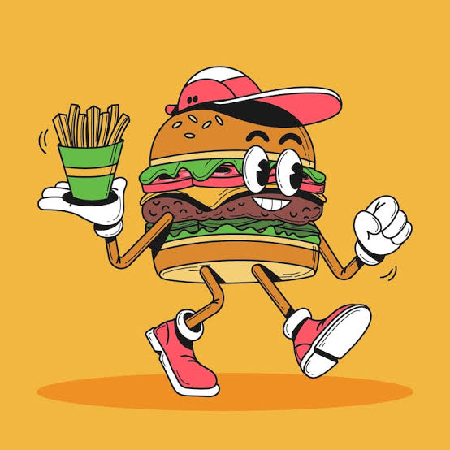
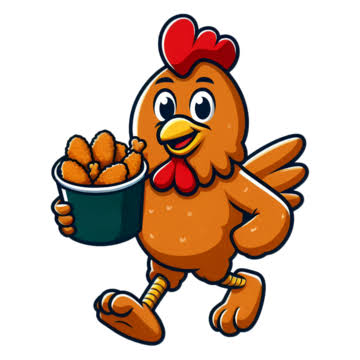

Chicken n'Rolls is not just a simple fast food resturant because here we not just serve food we serve 100% organic and original food, grown in our own gardens. Our daily goal is to create , serve and enjoy fine food. We love fresh food, flavourable food, food thats in season and food thats unique. Once you try it you get obsessed with it. Our speciality is cuisine created with ingenuty and passion inspired by fantastic flavours from around the world. Come to experience the best food and in the ultimate venue. we are famous for our delicious food and polite and loving staff.